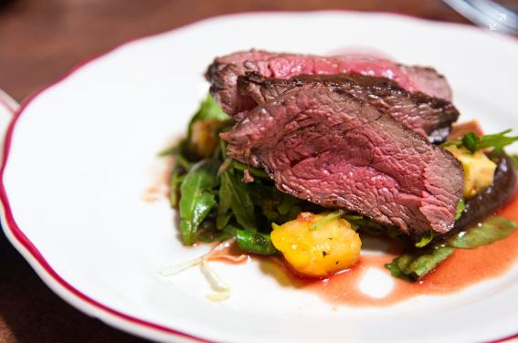

Home
Steak Butter

Description
Steak is a juicy, tender cut of beef, typically grilled or pan-seared to bring out its rich flavor. Seasoned simply with salt and pepper, it’s often served with sides like vegetables or potatoes for a satisfying main dish.
- Beef steak (ribeye, sirloin, or your choice)
- Salt
- Black pepper
- Olive oil or butter
- Garlic (optional)
- Fresh herbs like rosemary or thyme (optional)
Steps
- Season the steak with salt and pepper on both sides.
- Heat a skillet with some oil or butter over high heat.
- Place the steak in the skillet and cook for 3-5 minutes per side (depending on desired doneness).
- Optional: Add garlic and fresh herbs like rosemary during cooking for extra flavor.
- Remove the steak and let it rest for a few minutes before serving.